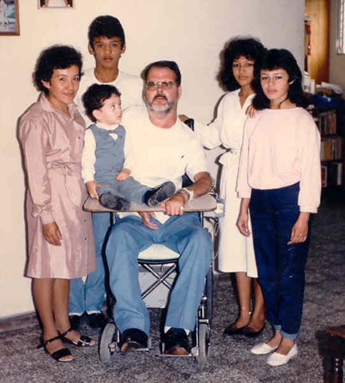
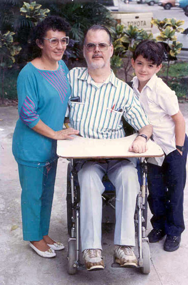

|
|  |
 |
| The Family |
at American School |
| La Familia |
en la Escuela Americana |
| This is the only photo I could find of the whole family. It shows Gloria, Terry, my brother Foncho, sisters Sonia and Areli, and myself. It doesn't show my cousin Oscar, which I have come to love as a brother. The other photo was taken at the American School of El Salvador. |
| Esta es la única photo que pude encontrar de toda la familia. Muestra a Gloria, Terry, my hermano, Foncho, hermanas Sonia y Areli, y yo. No muestra a mi primo Oscar, a quien he llegado a querer como hermano. La otra foto fue tomada en la Escuela Americana. |
|
|